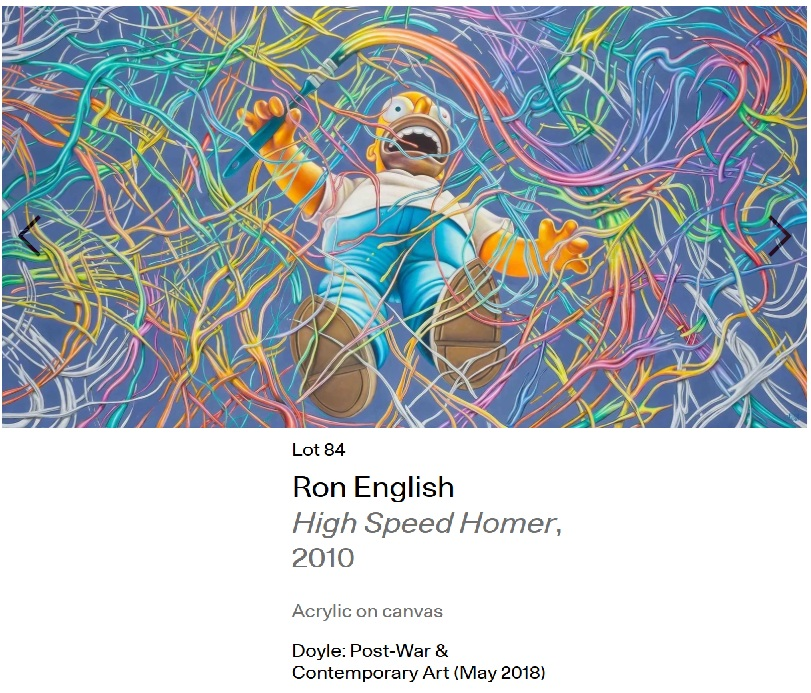
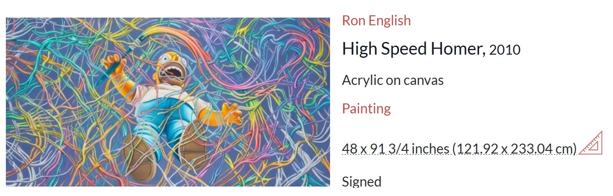
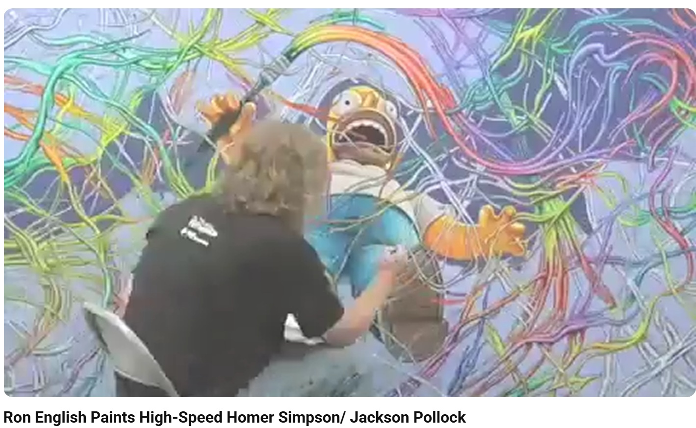
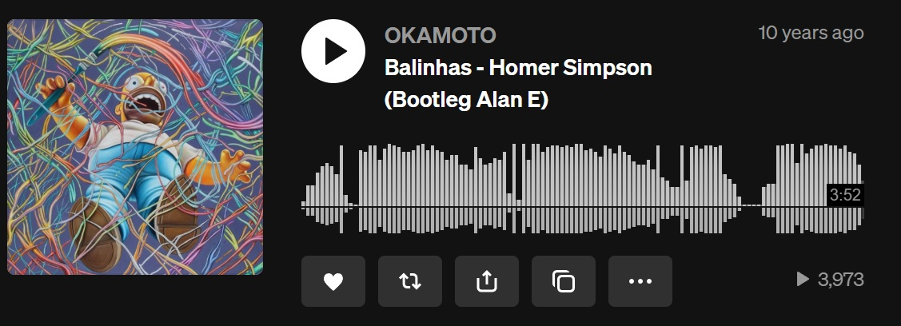
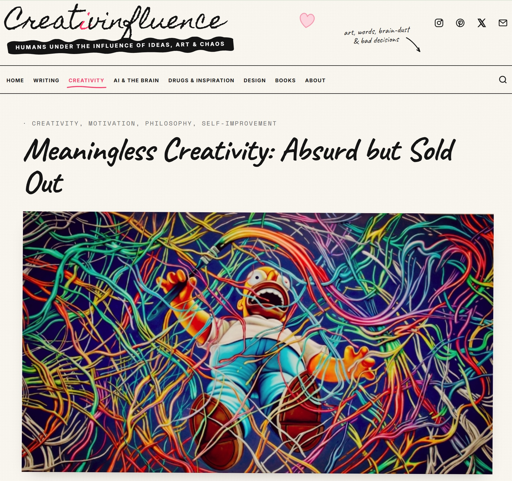

Literature
The Gazette. Tracy Mobley-Martinez, “When in doubt, laugh,” The Gazette, 2010, p. 8.

“Ron English,” CFYE Magazine (Crack For Your Eyes), Amsterdam, Netherlands, online feature, 2008. Originally published at cfye.com/ron-english-7806; the page is no longer available.
L. Ruano, “Ron English x The Simpsons 20th Anniversary Episode”, Hypebeast, 2010.
Marxs, “The Simpsons x Ron English – 20 Aniversario”, Vision Invisible, January 12, 2010.
candicepoka, “POP ART”, Look On The Bright Side, May 1, 2013.
Provenance
Private collection.
Notes
Also known as Homer Pollack.
A painted variation of this Homer/Jackson Pollock motif was associated with Ron English’s contribution to The Simpsons 20th Anniversary Special: In 3-D! On Ice!, directed by Morgan Spurlock.
Ancillary Documentation






